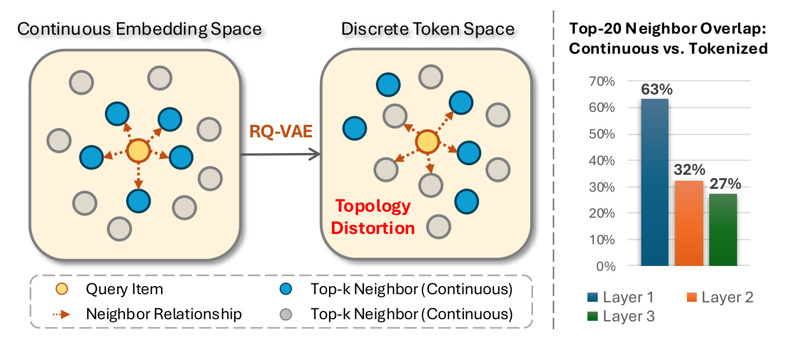
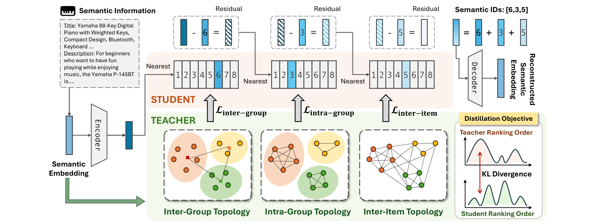
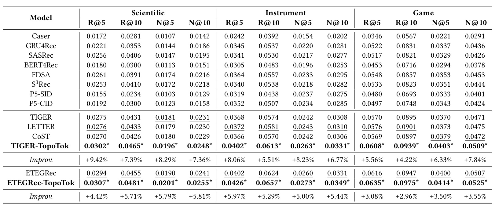
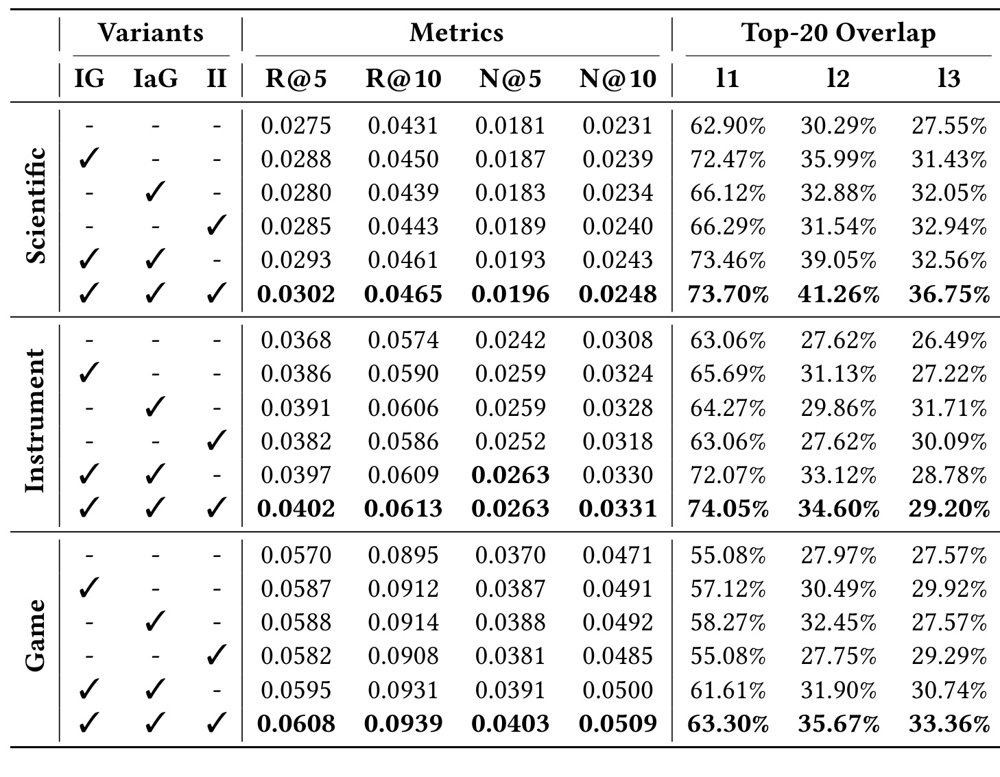
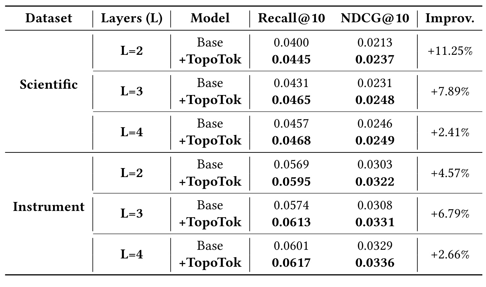
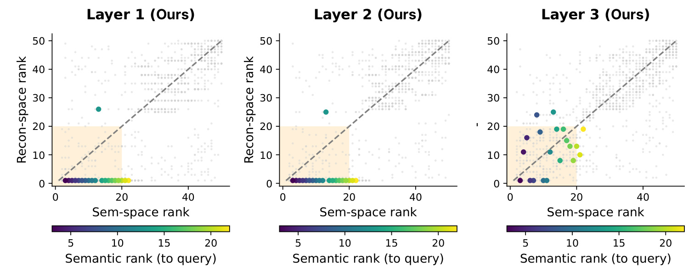

Topology-Aware Tokenization for Generative Recommendation
- 作者：Yaokun Liu、Yifan Liu、Zhenrui Yue、Gyuseok Lee、Zelin Li、Ruichen Yao、Dong Wang
- 机构：University of Illinois Urbana-Champaign
- 论文：arXiv:2607.18600
- 发表信息：RecSys 2026，10 pages，DOI 10.1145/3773078.3831780
- 公开时间：2026-07-21
- 代码状态：论文正文未给出可独立核验的官方代码仓库，本笔记不把第三方同名实现当作作者代码
核心问题：生成式推荐把候选物品改写成可自回归生成的语义 ID，但常用 RQ-VAE 只要求重构物品向量，并不保证量化前后的邻域排序一致。论文在引言中测得：连续语义空间的 top-20 邻居经过第一层量化后仅保留约 63%，到第三层只剩约 27%。因此，模型虽然可能重构出数值上接近的向量，却会把“谁与谁更相似”的结构性信息逐层打乱，最终让语言模型在错误的物品关系上学习下一个 token。
1. 背景和问题
生成式推荐的基本路线，是先把每个物品映射成一串离散 token，再让 T5 一类自回归模型依据用户历史生成下一件物品的 token 序列。与传统双塔检索相比，这种范式省去了高维向量上的 ANN 检索，并把内容语义、协同信号与序列预测统一到一个生成目标里。问题在于，语言模型看不到原始的连续物品向量，它真正消费的是量化器给出的离散标识。因此，tokenizer 不是一个可以忽略的预处理组件：只要离散空间改变了物品之间的相对邻近关系，后续生成器就会把这种偏差当作真实语义。
RQ-VAE 成为语义 ID 的主流骨干，是因为它用多层码本逐步量化残差：第一层编码较粗的概念，后续层依次补充更细的差异。它同时兼顾可学习性、较短 token 序列和语义压缩，TIGER、ETEGRec 等工作都建立在这类表示上。然而，重构误差只约束单个物品“量化前后是否接近”，没有直接约束一组物品之间的排名关系。两个物品各自的重构误差都不大，也可能因为误差方向不同而交换邻居次序；当这种局部交换贯穿多层残差量化时，离散 ID 的前缀和后缀就不再稳定对应原空间的粗粒度与细粒度结构。

图中左侧把连续空间里的查询物品、真实近邻及其关系画成一个局部图，经过 RQ-VAE 后，一部分原本不属于近邻的灰色物品进入离散空间的局部区域，原有蓝色近邻则被排开。右侧给出了更关键的量化证据：第一层仍保留 63% 的 top-20 邻居，第二层降至 32%，第三层仅为 27%。这不是“语义越来越精细”的正常现象，因为深层码本本应在保持粗粒度前缀的基础上补足差异；邻居重合率持续下降，说明残差递归正在积累关系噪声。图中的百分比来自论文给定示例，不能直接外推到所有数据集，但它清楚揭示了仅靠逐点重构目标无法保护邻域排序。
论文把这种现象称为 topology distortion。这里的“拓扑”并非严格意义上的同胚不变量，而是由两两相似度诱导的相对邻域结构：对每个物品而言，其他物品按距离从近到远如何排列。作者选择对“排名分布”而不是绝对距离做蒸馏，这一点很重要。教师空间可能来自 Sentence-T5 文本向量或 SASRec 协同向量，学生空间则是若干码本向量的离散组合，二者维度、尺度和几何形态并不相同；直接要求距离数值相等既不必要，也可能限制量化器压缩，而要求邻居相对次序接近更符合推荐任务真正依赖的局部结构。
要把这个想法放进 RQ-VAE，作者指出两项耦合难题。第一是层级监督：若只在最后重构结果上施加一个统一关系损失，早层可能欠训练，深层则被迫补偿之前累积的失真，形成监督纠缠。第二是粒度对齐：第一层通常只使用少量码字，代表大类；中间层用于区分类内物品；深层利用率更高，承担个体级残差。如果从第一层开始就要求所有物品的精细排序完全一致，粗码本会被不合时宜的细粒度约束拖累。TopoTok 的核心判断因此不是“增加一个拓扑损失”这么简单，而是让拓扑单元随量化深度从组、组内物品，逐步变成全体物品。
从研究定位看，这项工作填补的是 tokenizer 训练目标与层级结构之间的空隙。LETTER 引入协同与多样性正则，但没有显式拓扑监督；CoST 用对比目标维持邻域，却把整体信号主要施加在最终输出上，仍未区分每层的语义职责。TopoTok 不改变下游生成器，也不发明新的解码架构，而是把“哪些关系应在哪一层被保留”写进 RQ-VAE 的训练过程。它的价值取决于两条证据链是否同时成立：一是邻域重合率确实随蒸馏恢复，二是这种结构恢复能稳定转化为 Recall 与 NDCG 提升。后续实验正围绕这两条链展开。
2. 方法
TopoTok 的总体结构保持 RQ-VAE 的编码、残差查码本和解码路径不变，只在训练期引入教师—学生关系蒸馏。教师表示是量化前的物品语义向量；学生表示依阶段取码本原型或截至某层的累积重构向量。最关键的机制是：监督对象的粒度与码本层的语义容量同步变化。 第一层比较语义组之间的排列，中间层只比较同组物品，深层才比较全局物品关系。这样，早层无需承担个体级精确排序，深层也不会失去由前缀建立的类别骨架。

图 2 从左到右展示同一物品的完整路径：语义信息经编码器变成连续向量，三层残差码本依次选择 6、3、5，最后解码得到重构向量。上半部是学生量化路径，下半部是教师拓扑；三支向上的损失箭头分别把组间、组内和物品间关系注入对应层。右下角进一步表明作者对齐的是 teacher ranking order 与 student ranking order 的 KL 散度，而不是把两个空间的坐标强行拉到一起。该图还说明方法不依赖恰好三层：三种监督代表语义阶段，实际部署时可依据层数与码本利用率映射到不同量化深度。尤其要留意三支箭头都作用于累计残差路径，而非三个彼此独立的编码器；后一层学生表示继承前缀码字，所以深层蒸馏既能纠正细节，也受早层组结构约束。图中把 teacher 与 student 分成上下两条路径，还强调教师仅提供关系排序，不参与线上语义 ID 生成。
2.1 从 RQ-VAE 到拓扑蒸馏目标
给定用户历史，生成器把下一物品的语义 ID 分解成逐 token 条件概率。式（1）说明 tokenizer 的输出就是生成目标本身，而不是旁路特征；任一层 token 的错误都会改变后续条件分布，因此早层拓扑失真不仅影响一个码字，还会沿自回归前缀放大到整个物品标识：
符号解释：\(X_u\) 表示用户历史物品转换后的 token 序列，\(\mathbf{c}_{i_t}\) 是目标物品的长度为 \(L\) 的语义 ID，\(c_{i_t,l}\) 是第 \(l\) 层码本选择的 token；乘积表示模型按层自回归生成完整标识。
RQ-VAE 先把物品嵌入投影到潜空间，再按最近码字递归量化残差。每层选中的码字从当前残差中扣除，下一层只处理尚未解释的部分；这一机制天然产生从粗到细的前缀，但并不自动保证关系结构。把论文式（2）至式（7）压缩后，核心递归与基础训练目标可写为：
符号解释：\(\mathbf{s}_i\) 是物品 \(i\) 的预训练语义嵌入，\(\mathbf{z}_i\) 是编码后的潜向量，\(\mathbf{r}_0=\mathbf{z}_i\)；\(\mathbf{e}_{l,j}\) 是第 \(l\) 层第 \(j\) 个码字，\(c_l\) 是当前最近码字索引，\(\mathbf{r}_l\) 是交给下一层继续量化的残差。
符号解释：\(\widehat{\mathbf{z}}_i\) 是各层选中码字相加得到的重构潜向量，\(\mathcal{L}_{\mathrm{recon}}\) 约束解码结果接近原嵌入，\(\mathcal{L}_{\mathrm{commit}}\) 通过 stop-gradient 项稳定残差与码字的相互追随；这两个逐点目标本身不显式保护物品之间的邻域排序。
TopoTok 对一组拓扑单元分别构造教师距离矩阵与学生距离矩阵，并把每一行负距离做 softmax，转成“以当前单元为查询时，其他单元的相对相似度分布”。这种逐行归一化让每个查询都有自己的邻域概率，也避免某些高范数向量支配整个 batch。公式（8）和（9）的组合如下：
符号解释：\(\mathbf{D}^{t}\) 与 \(\mathbf{D}^{s}\) 分别是教师、学生空间的成对距离矩阵；\(\mathbf{P}^{t}[i,:]\) 与 \(\mathbf{P}^{s}[i,:]\) 是以单元 \(i\) 为中心的邻域排名分布，负号保证距离越小、softmax 概率越高。
符号解释：\(M\) 是当前粒度下的拓扑单元数，\(\operatorname{KL}\) 衡量教师排名分布到学生排名分布的偏离；优化时只要求相对邻近结构一致，因此允许两个表示空间具有不同维度和距离尺度。
这一步是方法的统一模板：三种蒸馏不需要三套完全不同的损失，差异在于“拓扑单元是谁”“学生表示取哪一层”“哪些物品对允许进入距离矩阵”。它也带来一个实现层面的代价：成对距离原则上具有平方级复杂度。论文将计算限制在训练 batch 内，并利用矩阵运算并行化，没有建立全物品距离矩阵；因此其成本随 batch 大小而非目录规模增长，但大 batch 下的显存与距离矩阵计算仍是复现时必须单独测量的开销。
2.2 三层粒度：Inter-Group、Intra-Group、Inter-Item
Inter-Group（IG）负责全局组间骨架。 在残差层 \(l\)，共享同一码字的物品组成语义组，教师端用组内原始语义向量的质心代表该组，学生端直接用对应码字代表该组。比较单位从海量物品压缩成活跃组，也使第一层无需过早拟合个体差异。论文式（10）至式（12）可概括为：
符号解释：\(\mathcal{G}_{l,j}\) 是第 \(l\) 层选择码字 \(j\) 的物品集合，\(\mathbf{h}^{t}_{j,\mathrm{IG}}\) 是该组在连续空间的语义质心，\(\mathbf{h}^{s}_{j,\mathrm{IG}}\) 是离散侧码字原型；二者各自形成组间距离矩阵后再代入统一的 KL 排名损失。
IG 通常放在第一层，因为低码本利用率意味着许多物品聚集在少数码字上，此时单个码字确实更像“大类原型”。它不试图决定同组两件商品谁更近，只要求乐器组、游戏组等高层语义簇在学生空间保持合理的相对位置。这样可以防止第一层就产生方向错误，并降低错误沿残差层传播的风险。局限也很清楚：质心会抹去多峰组内结构，若第一层码字已经高度细分，简单均值未必能代表真实组形状。
Intra-Group（IaG）负责组内局部结构。 作者把教师表示设为原始语义向量，把学生表示设为截至当前层的码字累积和，但只让上一层落在同一语义组的物品对拥有有限距离；跨组距离置为无穷大，softmax 后近似不参与排序。对应式（13）至式（15）为：
符号解释：教师端保留物品 \(i\) 的原始连续表示，学生端使用前 \(l\) 层累计重构；这使 IaG 评价的是到当前深度已经恢复的语义，而不是某个孤立码字。
符号解释：上标 \((\cdot)\) 同时代表教师或学生距离；条件 \(c_{i,l-1}=c_{j,l-1}\) 把比较限制在上一层同组物品内，跨组对被屏蔽。于是第二层专注细化组内邻居，不会破坏第一层已建立的全局边界。
Inter-Item（II）负责深层的个体级全局排序。 它沿用原始语义向量与累计重构表示，但取消同组掩码，对 batch 内所有不同物品建立成对距离。深层码本利用率较高、残差更细，此时全局物品级关系才与该层容量匹配；这一步还负责纠正跨组边界附近的近邻，补上 IaG 掩码无法直接比较的物品对：
符号解释：II 的学生向量仍累计前缀码字，因而其细粒度约束不会脱离早层语义骨架；与 IaG 的区别是所有物品对均可进入排名分布，让深层在全局范围校正最终邻域。
三种目标形成一种逐步扩大分辨率的课程：IG 的单元数是活跃语义组数，IaG 的单元是组内物品，II 的单元是 batch 内全部物品。值得注意的是，论文所谓“coarse-to-fine”并不意味着监督候选集合单调变大：IaG 反而通过掩码缩小比较范围，但它把单元从组质心细化成物品；II 再恢复全局物品比较。这种“单元精细化”和“比较范围变化”要分开理解，否则很容易把 IaG 错读成普通的局部对比损失。
2.3 层级部署与联合训练
在三层 RQ-VAE 中，作者固定把 IG 放在第一层、IaG 放在第二层、II 放在第三层；若深度超过三层，则所有更深层都可以采用 II。两层配置没有足够中间层容纳 IaG，于是使用 IG 加 II，保留全局骨架与个体可分性。论文还提出一个更具可迁移性的部署准则：查看码本利用率。低利用率层通常表示粗语义，适合 IG；中等利用率层适合 IaG；接近充分利用的深层适合 II。这让 TopoTok 从固定三层技巧变成可适配不同 tokenizer 深度的策略，但论文没有给出利用率阈值的自动选择算法，工程实现仍需在验证集上确定映射。
最终训练目标把三种拓扑损失与原 RQ-VAE 目标相加。保留重构与 commitment 项意味着方法不是用关系排序替代语义压缩，而是在同一 tokenizer 中同时优化逐点保真和结构保真；唯一新增的总权重 alpha 决定两类目标的竞争强度：
符号解释：\(\alpha\) 控制拓扑保持与语义重构之间的权衡，三个子损失分别在其对应量化层计算；它们只参与训练，不改变 tokenizer 输出格式、生成器结构或线上推理路径。
该目标的边界在于，拓扑并非越强越好。若 alpha 太小，邻域信号不足以纠正重构目标；若太大，模型会为保持排名牺牲逐点语义重构。论文的超参数曲线确实呈现先升后降。由于所有蒸馏只在训练期产生，TopoTok 声称推理阶段没有新增计算，这一说法从计算图上成立：线上仍是编码、查码本、生成语义 ID。但论文只给出“modest training overhead”的定性描述，没有报告训练时延、峰值显存或吞吐表，因此不能把“零推理增量”误写成“训练成本可以忽略”。
3. 实验结果
实验使用 Amazon Review 2023 的 Industrial Scientific、Musical Instruments 和 Video Games 三个子集，先做 5-core 过滤，再按时间构造最长 20 的用户交互序列。每个用户最后一次交互用于测试、倒数第二次用于验证，其余用于训练；评价采用全候选排序而非负采样，指标是 Recall@5、Recall@10、NDCG@5 和 NDCG@10。默认 tokenizer 为三层 RQ-VAE，每层 256 个、维度 128 的码字，TopoTok 训练 10k epoch，AdamW 学习率 1e-3、batch size 2048，alpha 从 0.01、0.1、0.3、0.5、1 中按验证集选择。实验在单张 NVIDIA Tesla A40 上完成，并对五次独立运行做配对 t 检验；主表为复现给出 seed 2025 的结果。
基线覆盖三组：传统序列推荐包括 Caser、GRU4Rec、SASRec、BERT4Rec、FDSA、S3Rec；生成式推荐包括 P5-SID、P5-CID、TIGER、ETEGRec；tokenizer 增强包括 LETTER 与 CoST。TopoTok 同时接入先训练 tokenizer 再训练推荐器的 TIGER，以及 tokenizer 与推荐器端到端联合优化的 ETEGRec。这样的对照能检验方法是否只对某一训练范式有效，但没有覆盖工业级超大物品库、不同语种内容或在线延迟场景，结论边界仍是三个 Amazon 子集上的离线全排序。

表 1 给出的证据很完整。TIGER-TopoTok 在三数据集、四指标上全部超过 TIGER、LETTER 和 CoST，Scientific 的 Recall@5 从 0.0275 提升到 0.0302，相对增益 9.42%，是摘要所称最大提升；同一数据集的 Recall@10、NDCG@5、NDCG@10 分别提升 7.39%、8.29%、7.36%。Instrument 上四项增益为 5.51% 至 8.23%，Game 上为 4.22% 至 7.84%。带星结果表示相对基础模型在五次运行的配对 t 检验下达到 p<0.05。重要的是，这些百分比是相对提升而非绝对百分点，且三数据集的原始 Recall 数值处于不同尺度，跨域比较应看一致性而不是只看最大百分比。
在端到端骨干上，ETEGRec-TopoTok 同样全面超过 ETEGRec：Scientific 四指标提升约 4.42% 至 5.81%，Instrument 提升 5.00% 至 5.97%，Game 提升 2.96% 至 3.55%。其绝对结果又整体高于 TIGER-TopoTok，例如 Game 的 Recall@10 为 0.0975，而 TIGER-TopoTok 为 0.0939。作者据此认为，可微 RQ-VAE 允许生成目标反向影响 tokenizer，拓扑监督能在联合训练中稳定语义结构。这个解释与结果一致，但主表并不能单独排除调参预算差异；更稳妥的结论是，TopoTok 的收益没有依赖某一特定的两阶段训练流程。

表 2 把推荐指标与每层 top-20 邻居重合率放在同一张表里，是论文最关键的因果链证据。以 Scientific 为例，无蒸馏时三层重合率为 62.90%、30.29%、27.55%；只加 IG 后变成 72.47%、35.99%、31.43%，说明早层组间骨架改善会向深层传递。只加 IaG 时第二、三层分别达到 32.88%、32.05%；只加 II 时第三层达到 32.94%。完整 IG+IaG+II 则达到 73.70%、41.26%、36.75%，同时 Recall@10 从 0.0431 升到 0.0465。它支持“三级互补”，而不是某一个损失单独包办全部增益。
另外两个数据集的模式并非完全一致，这恰好暴露了粒度的作用。Instrument 完整模型的三层重合率是 74.05%、34.60%、29.20%，均高于基线 63.06%、27.62%、26.49%；Game 则从 55.08%、27.97%、27.57% 提升到 63.30%、35.67%、33.36%。但某些单组件会让个别层不升反降：例如 Game 的 IaG-only 第三层仍为 27.57%，IG+IaG 的第三层是 30.74%，低于完整模型 33.36%。这说明早层或局部约束不会自动完成深层个体排序，三类目标的层级部署确实比简单叠加单一最终损失更合理。与此同时，论文没有报告移除某一组件但保留其他两个的全部组合，因而无法精确分解各组件间的交互项。

表 3 评估两层、三层、四层 RQ-VAE。Scientific 上，TopoTok 对 Recall@10 的相对提升依次为 11.25%、7.89%、2.41%；Instrument 上依次为 4.57%、6.79%、2.66%，且对应 NDCG@10 均同步上升。最强增益出现在 Scientific 的两层设置，与浅层压缩更容易丢失关系结构的解释相符；四层增益缩小，则可能说明更多残差容量已能保留一部分细粒度语义。不同深度均为正提升，支持架构兼容性，但表中未包含 Game，也没有给出各深度的码本利用率与训练成本，所以“利用率驱动的自动映射”仍是设计建议，而非被完整验证的算法。
复杂度方面，TopoTok 的三种关系损失都在 batch 内构造成对距离矩阵，矩阵运算可并行，且蒸馏分支在训练结束后移除，因此线上 tokenization 与推荐生成没有额外算子。这里应区分三层含义：第一，推理延迟理论上不变；第二，训练参数规模几乎不变，因为没有新增持久网络；第三，训练计算与显存并非为零，batch size 2048 时成对矩阵本身就有数百万元素，三种粒度还会在不同层重复计算。论文未提供 wall-clock、显存峰值或 FLOPs，对“modest overhead”只能标为作者陈述。若复现，应同时记录基础 RQ-VAE 与 TopoTok 的每步时间、显存、收敛 epoch，并检验邻域收益是否抵得上训练成本。
超参数 alpha 的结果呈单峰趋势。Scientific 与 Instrument 在 0.1 达到最好表现，Game 在 0.3 最优；继续增大到 0.5 或 1 时 Recall@10 和 NDCG@10 均下降。这个趋势符合联合目标的竞争关系：适度拓扑约束能纠正邻域错序，过强则会阻碍向量重构。它也意味着 alpha 不能跨域直接照搬，数据集的内容噪声、协同稠密度和码本利用率都可能改变最佳权重。论文在预先给定的五个离散候选中选择，没有进一步报告连续敏感性、不同 batch size 下的尺度变化或三类损失分别加权的结果。

图 6 对同一查询商品，比较连续语义空间排名与每层重构空间排名。横轴越小表示原空间越邻近，纵轴越小表示重构空间越邻近；彩色点是查询物品的前 20 个语义邻居，灰点是其他采样物品对，虚线对角线代表理想排名一致。TopoTok 的第一、二层多数彩色点贴在重构排名前列，说明共享前缀把核心近邻聚到一起；第三层彩色点分布更开，但大量点仍落在左下的 top-20 区域，灰点也更接近对角线。论文与 TIGER、CoST 的对应图对比后指出，后二者在深层出现更多邻居越界，而 TopoTok 保持较稳定的多层结构。
这个案例还能解释 Table 4 中的语义 ID 现象：查询物品在 TopoTok 下是 [50, 207, 136]，多数前排邻居共享前两个 token 50、207，第三个 token 再区分个体；这正对应 IG 建立粗组、IaG 细化组内、II 完成个体排序的设计。不过，Figure 6 只展示一个随机查询，彩色点在第三层也不是全部贴近对角线，不能替代总体统计。可信度更高的证据仍是 Table 2 对全数据的平均 top-20 overlap；案例图的作用是把“平均重合率提高”还原成可观察的排名几何，而不是证明每个查询都得到改善。
综合实验链条，TopoTok 的优势有三层：主表证明推荐准确率在两个骨干与三个数据集上稳定提高；组件消融把提升连接到邻域重合率恢复；深度与案例分析说明效果不局限于默认三层配置。仍缺少的证据包括更大规模或非 Amazon 数据、训练开销量化、随机查询的分布性可视化、码本利用率阈值以及与近似低成本拓扑损失的比较。因此，当前结果足以支持“层级拓扑监督优于无监督或末层单体监督”，但不足以宣称它已经解决所有生成式推荐 tokenizer 的结构失真。
4. 总结
TopoTok 把生成式推荐中的一个隐蔽瓶颈说得很清楚：语义 ID 质量不能只由单物品重构误差衡量，还要看离散化后物品关系是否保真。论文观察到 RQ-VAE 的 top-20 邻居重合率会随量化深度从 63% 降到 27%，于是用统一的排名分布 KL 框架，把组间、组内、物品间三种拓扑蒸馏分别放到粗、中、细语义层。方法没有改变语义 ID 格式和下游自回归生成器，因此可插入 TIGER 与 ETEGRec，并保持线上推理图不变。
从证据强度看，最有说服力的不是单个 9.42% 数字，而是结构指标与任务指标同时改善。完整三级目标在 Scientific 上把三层邻居重合率提升到 73.70%、41.26%、36.75%，Recall@10 同时从 0.0431 提升到 0.0465；相似模式也出现在 Instrument 与 Game。TopoTok 在 TIGER 和 ETEGRec 两种训练范式、二至四层 tokenizer 上都带来正收益，说明其贡献更接近一条通用训练原则：量化层承担什么语义粒度，就应接受同粒度的关系监督。
这项工作的工程启发是，评估 tokenizer 时应增加层级邻域诊断，而不是只看重构损失、码本利用率或最终 Recall。可以在每层记录 top-k overlap、码字占用、组内与组间距离，再决定 IG、IaG、II 的部署位置。上线前还应补测 batch 成对距离带来的训练时延与显存，因为“零推理开销”并不等于“训练免费”。对于两层模型，论文建议 IG+II；对于更深模型，可参考码本利用率映射粒度，但阈值需要验证集确定，不能机械照抄三层配置。
局限方面，实验集中在三个 Amazon 子集，案例可视化只有一个查询，训练开销缺少数字，且三种子损失采用等权求和，尚未讨论数据噪声或长尾物品对教师拓扑的影响。如果原始语义嵌入本身把协同关系编码错了，TopoTok 会更忠实地蒸馏这种偏差；若 batch 不能覆盖足够多的邻域，排名分布也可能只是局部近似。后续值得验证的方向包括跨模态教师、近邻稀疏化以降低平方级训练成本、按码本利用率自动分配监督层，以及把拓扑质量与语义 ID 冲突率、非法生成率和在线转化指标联动评估。
总体而言，这篇论文的贡献不是为生成器增加更复杂的语言建模模块，而是重新校准 tokenizer 的学习目标：离散表示应同时重构“物品是什么”和“物品与谁相近”。 三层蒸馏把这条原则具体化为可训练、可消融、可插拔的方案。现有离线结果支持其有效性与架构兼容性，但对大规模训练成本、教师空间可靠性和线上收益仍需后续验证。就推荐系统研究而言，TopoTok 提供了一个值得复用的审视框架：当离散 token 被当作语言模型词表时，码本的层级几何本身就是模型知识的一部分。